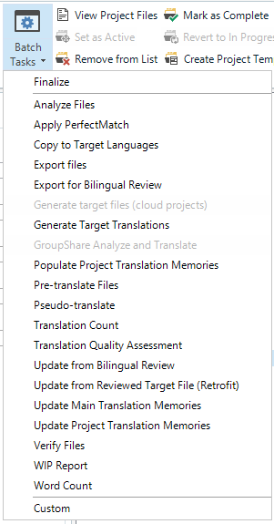
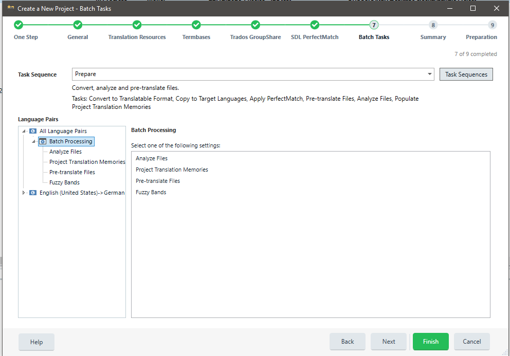
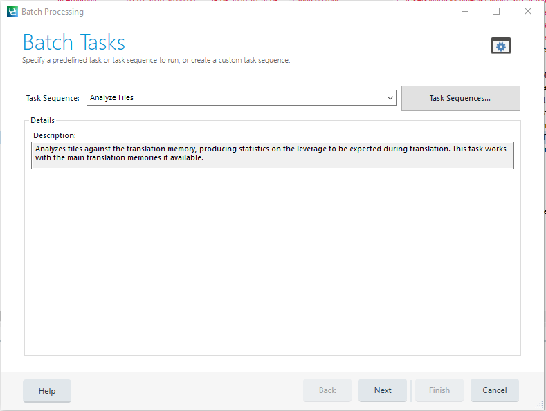
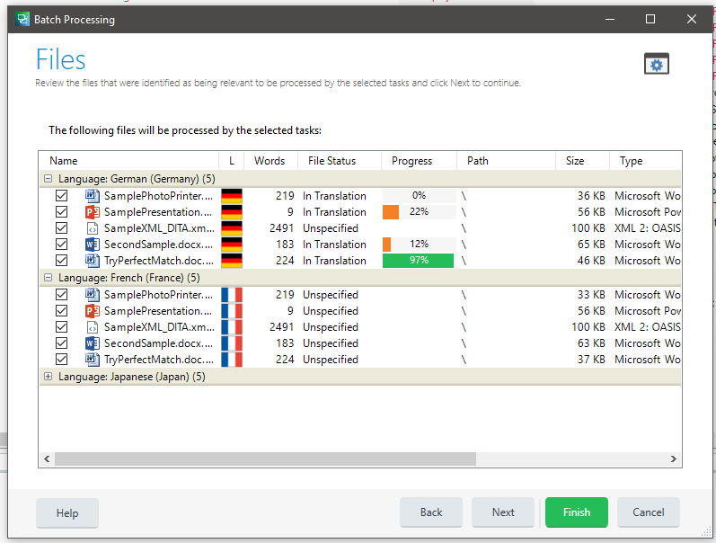
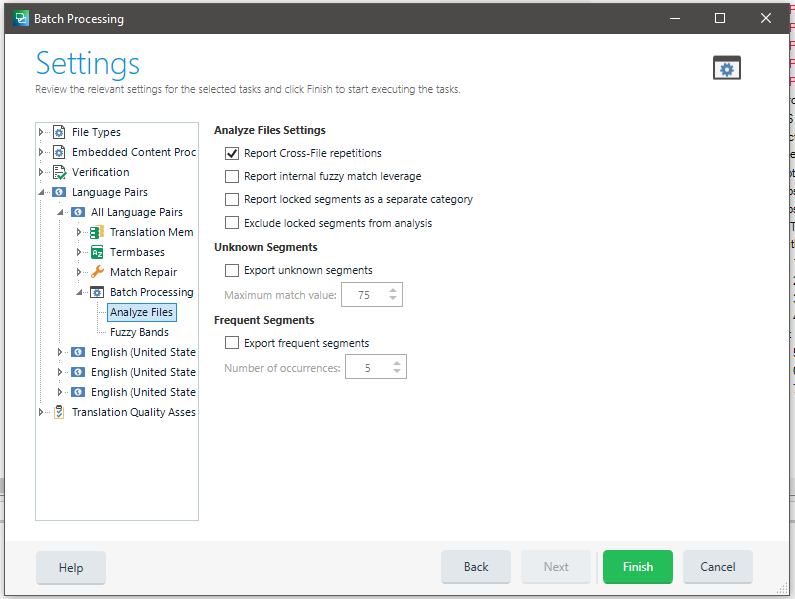
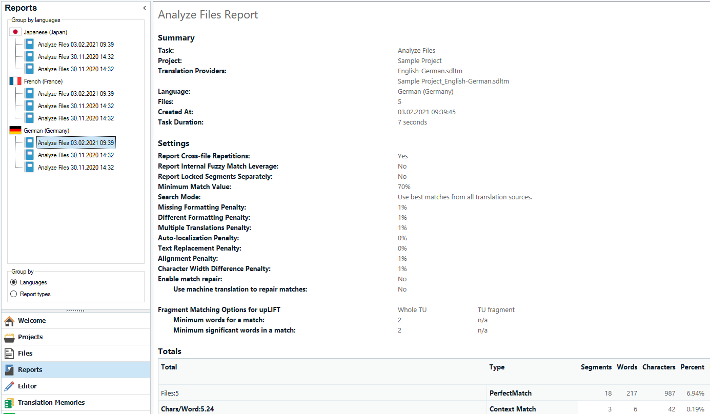

Batch Tasks Overview
This section gives an overview of what batch tasks in Trados Studio are and what they are used for.
What are Batch Tasks?
Batch tasks are used to process one or many project files in Trados Studio. There are several built-in batch tasks, for example, for analysing and pre-translating files. Batch tasks are most frequently applied to the bilingual SDLXliff files, but can also be used to process native file formats (for example, DOCX or PPTX). Batch tasks are typically used to:
- Alter the content of files (for example, the Pre-translate Files task inserts matches from a translation memory into the selected files).
- Read the content of files and compile a report (e.g. the Analyze Files task that determines the translation memory leverage for selected files).
- Extract content from the selected files to write them into another file format (for example, the Export for External Review) task that generated bilingual Microsoft Word tables from SDLXliff files.
The only standard batch task that works directly on the native files is the Convert to Translatable Format task, which converts native files (for example, DOCX) to SDLXliff.
End users can run batch tasks by selecting them from a list in the Trados Studio user interface.  Batch tasks are also typically executed when creating a project. In this case, batch tasks are applied to the project files in a sequence, for example: 
Batch tasks are shown the Trados Studio user interface with a name and a description, for example: 
Batch tasks are then applied to one or multiple files, e.g.: 
Batch tasks can have settings that you can configure through a property page. For the analysis task, for example, there is a setting that determines whether cross-file repetitions should be reported or not, for example: 
Batch tasks can also generate a report that the user can view and print. For the analysis task, the report states the number of no matches, fuzzy matches, exact matches, repetitions, etc. 